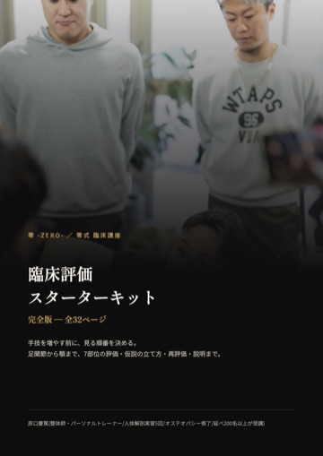
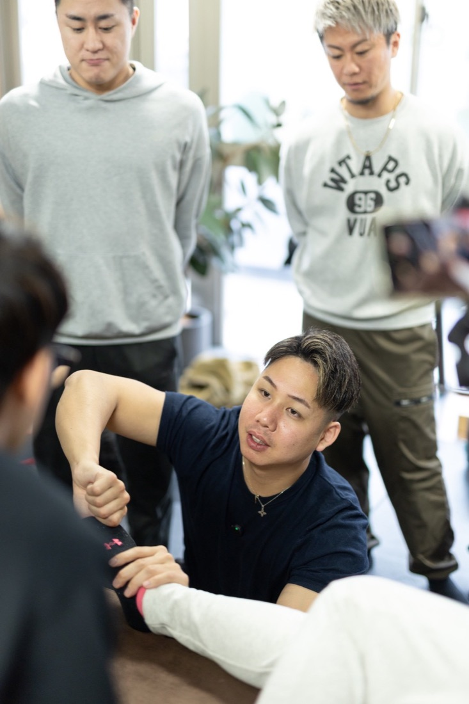

トレーナー・整体師・セラピストの方へ
手技を増やす前に、
「なぜそこか」を説明できるか。
施術しても戻る、説明に自信が持てない ― その多くは、手技の数ではなく「見る順番」が決まっていないことから起こります。「あるある」と思うものを4つだけチェックしてください。あてはまった悩みに合わせた特典をお届けします。
無料プレゼント
臨床評価スターターキット

32ページ
7部位の評価法
記入例3つ
印刷用評価シート
＋手技セミナー動画
7部位の評価法
記入例3つ
印刷用評価シート
＋手技セミナー動画
- 臨床評価スターターキット 完全版(PDF・32ページ):7部位の評価法・仮説の立て方・記入例3つ・印刷用評価シート
- 特典動画:手技セミナー下肢編の一部を公開
- 7日間講座「足関節から顎まで、つながりで身体を見る」
- 全国の専門家が集まる無料コミュニティへの招待
所要1分・登録は無料。いつでもブロックできます。
LINE登録後にできること
キットを受け取ったあとも、このLINEから学びを続けられます。
📖7日間講座を
最初から読む
最初から読む
🎓零式セミナー
日程
日程
💬無料コミュニティ
(162名)
(162名)
❓質問を
送れる
送れる
🔑ZERO
MEMBERS
MEMBERS
👤原口の
プロフィール
プロフィール

7日間講座の内容
足関節 ― 評価の順番/歩行 ― 足から上に何が伝わるか/姿勢 ― 「良い姿勢」を決めつけない評価/筋膜 ― つながりの考え方とその限界/顎と全身/人体解剖実習で見たこと/まとめ
原口 慶篤
パーソナルトレーナー兼整体師。トレーナー歴12年。全国でトレーナー・セラピスト向けの零式セミナーを開催し、延べ200名以上が受講。
NASM-PES/NSCA-CPT/人体解剖実習5回修了/オステオパシー修了/赤十字救急法救急員